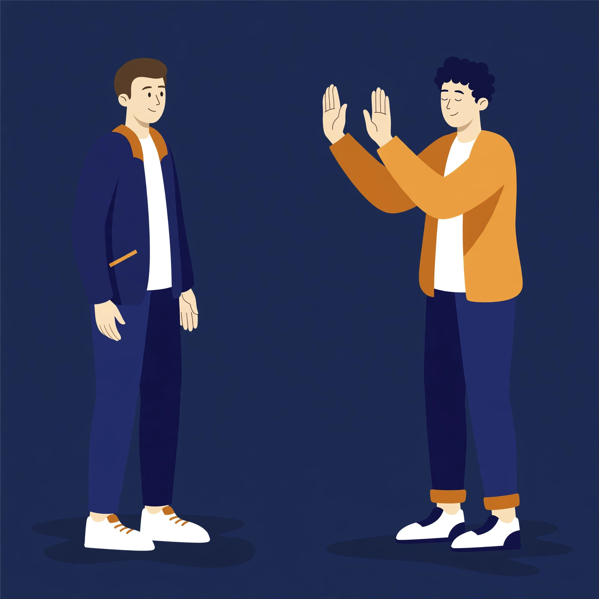

防犯ブザーの正しい使い方と持たせ方（子ども・高齢者）
防犯ブザーは、音で周囲に知らせるための道具です。攻撃のための道具ではありません。いざというときに鳴らせるよう、選び方と持ち方、鳴らす練習までを決めておきます。

防犯ブザーの役割：音で知らせる
防犯ブザーの役割は、大きな音を出して周囲の人に知らせることです。音を聞いた人が振り返り、助けを呼んだり、相手の行動を止めたりするきっかけになります。ブザー自体に、相手を止める力はありません。ブザーを鳴らした後に、逃げるための時間を稼ぐことが目的です。ブザーは、声が出しにくい状況や、夜間の暗い場所でも、音で知らせることができる道具です。
防犯ブザーは、子どもや高齢者が持ち歩く場合も、同じ役割です。子どもが不審な人に声をかけられたとき、高齢者が転倒して助けが必要なときなど、声を出すのが難しい状況で音を出すことができます。ブザーを持たせるだけでなく、いつ鳴らすか、鳴らした後にどうするかを一緒に決めておくことが大切です。
選び方の考え方
- 音の出し方が分かりやすいもの（引くタイプ・押すタイプ）を選ぶ
- 片手で操作できる大きさと重さを選ぶ（子どもや高齢者が持ちやすいもの）
- 電池式か充電式かを確認し、電池の交換や充電の方法を知っておく
- 雨に濡れても使えるか、防水の表示を確認する
- 誤って鳴りにくい構造か（カバンの中で引っかからないか）を確認する
- ストラップやクリップで、バッグやランドセルに付けられるものを選ぶ
防犯ブザーを選ぶときは、音の大きさだけで決めないようにします。いざというときに、すぐに鳴らせるかどうかが大切です。引くタイプは、ピンを引く動作で音が出ます。押すタイプは、ボタンを押す動作で音が出ます。どちらの方が操作しやすいかは、持つ人の手の大きさや、力の入れやすさによって変わります。実際に手に取って、操作を試してみるのが確実です。
正しい持ち方・付け方
防犯ブザーは、すぐに手が届く場所に付けるのが基本です。バッグの奥に入れたままでは、いざというときに取り出せません。バッグの外側のポケットや、ストラップに付ける、ランドセルの肩ひもに付けるなど、手が届く場所を選びます。付けた場所は、普段から確認しておきます。ブザーを付けたままにしておくことで、周囲に「ブザーを持っている」ことが伝わり、不審な接近を思いとどまらせる効果も期待できます。
子どもに持たせる場合は、ランドセルの肩ひもや、通学用のバッグの外側に付けます。高齢者に持たせる場合は、散歩用のバッグや、杖に付けるホルダーなど、手が届く場所を選びます。付け方を決めたら、実際に取り出す練習をします。バッグを持った状態で、ブザーに手を伸ばし、鳴らすまでの動作を確認します。
鳴らす練習と使う場面
防犯ブザーは、持っているだけでは使えません。鳴らす練習をしておくことが大切です。練習では、実際に音を出して、鳴らすまでの動作を確認します。音を出すときは、周囲の人に迷惑をかけないよう、屋外や、音を出しても問題のない場所で行います。練習の回数は、多くなくて構いません。鳴らす動作を、一度でも体で確認しておくことが大切です。
鳴らす場面は、決めておきます。不審な人に声をかけられたとき、後ろから近づく気配を感じたとき、つかまれたときなど、危険を感じたときに鳴らします。鳴らした後は、その場に立ち止まらず、逃げる方向に移動します。人通りの多い場所や、明るい場所、コンビニや交番など、駆け込める場所に向かいます。鳴らした後に、周囲の人に助けを求める声を出すことも大切です。「助けてください」と声を出すことで、周囲の人の注意を引きます。
誤って鳴らしてしまった場合は、慌てずに音を止め、周囲の人に「誤って鳴らしてしまいました」と伝えます。誤作動を防ぐために、バッグの中で引っかからないよう、カバーを付けるなどの工夫も考えられます。電池が切れていないか、定期的に点検します。電池式のものは、電池の交換時期を確認し、充電式のものは、充電の習慣を付けます。
子ども・高齢者への持たせ方
子どもに防犯ブザーを持たせるときは、使い方を一緒に確認します。「変な人に声をかけられたら、ブザーを鳴らして逃げる」「知らない人についていかない」といった約束を、子どもと一緒に決めます。ブザーを鳴らす練習は、子どもと一緒に行い、鳴らす動作を確認します。ブザーを持たせた後は、定期的に「ブザーはどこに付けている？」「鳴らす練習をした？」と声をかけ、使い方を忘れていないかを確認します。
高齢者に持たせる場合も、同じように使い方を確認します。高齢者は、散歩中に転倒したり、体調が悪くなったりしたときに、ブザーで助けを求めることができます。ブザーの操作が難しい場合は、押すタイプのものや、大きなボタンのものを選びます。ブザーを持たせるだけでなく、家族で「ブザーが鳴ったら、どう対応するか」を決めておきます。ブザーの音が聞こえたら、すぐに様子を見に行く、近所の人に声をかけるなど、家族での対応を共有します。
チェックリスト
- 操作しやすいタイプのブザーを選び、実際に鳴らす練習をした
- すぐに手が届く場所に付けている（バッグの奥に入れていない）
- 鳴らす場面と、鳴らした後の逃げる方向を決めている
- 電池の点検と交換・充電の習慣がある
- 子ども・高齢者への持たせ方と、家族での対応を共有している
防犯ブザーは、持っているだけでは意味がありません。選び方と持ち方、鳴らす練習、鳴らした後の行動までを決めておくことで、初めて役に立つ道具になります。定期的に点検し、使い方を確認する習慣を付けてください。
法律面の注意（必ず読んでください）
護身の行動には、必ず法律の判断が伴います。基本を押さえておいてください。
- 正当防衛（刑法36条）：「急迫不正の侵害に対して、自己又は他人の権利を防衛するため、やむを得ずにした行為」は罰しないとされています。要件は、侵害が差し迫っていること（急迫）、違法な侵害であること（不正）、自分や他人の権利を守るためであること、そして防衛のためにやむを得ない行為であることです。
- 過剰防衛：防衛の程度を超えた行為は過剰防衛となり、処罰の対象となり得ます（情状により刑の減軽・免除の余地はあります）。相手が逃げ出した後に追いかけて攻撃する、侵害が終わった後に仕返しをする、といった行為は防衛とは認められません。
- 護身用品の携帯と軽犯罪法：正当な理由なく刃物などを隠して携帯することは、軽犯罪法の凶器携帯の禁止に触れる場合があります。「護身用だから」という理由だけでは正当な理由にはなりません。催涙スプレーなども、携帯の態様によっては同様の問題が生じ得ます。道具に頼る前に、察知と距離と逃走の手順を固める方が、法律面でも安全です。
詳しくは 正当防衛・過剰防衛・凶器携帯の基礎 を読んでください。なお、本ページの法律情報は一般的な情報であり、個別の事案に対する法的助言ではありません。具体的な判断が必要な場合は弁護士に相談してください。
※PR・広告を含みます
道具の紹介
この記事の手順で検討されることの多い道具の検索入口です。価格や仕様は販売ページで確認してください。